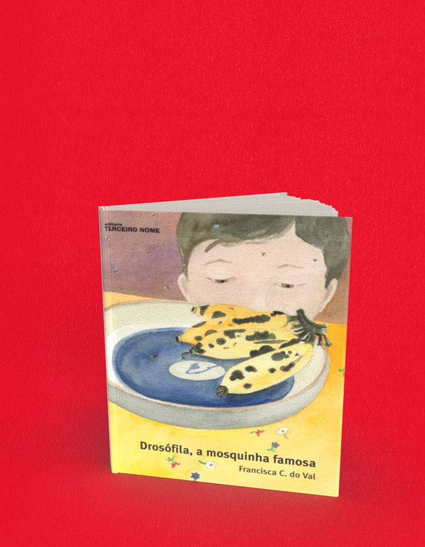

Drosófila a mosquinha famosa
A compra acontece no site da livraria, em uma nova aba. Consulte lá os preços e a disponibilidade. Procure pelo título ou ISBN deste livro.
- Autoria / créditos
- Francisca C. do Val
- ISBN
- 9788578160036
- Páginas
- 48
- Formato
- 21 x 17 cm
- Acabamento
- capa dura/brochura
Sobre o livro
A drosófila é a mosquinha mais famosa do mundo porque, por se reproduzir muito rapidamente, é a mais usada nas pesquisas científicas. Esse livro nos conta como elas nascem, onde vivem, como namoram e se reproduzem e as descobertas que ajudaram a comprovar a teoria da evolução de Charles Darwin.
Quando este livro infantojuvenil foi lançado, no SESC-Pinheiros, a Chica (como Francisca do Val é chamada pelos amigos) comprou um super microscópio com que mostra aos curiosos mosquinhas de todos os tipos (com olhos vermelhos, com asas que não fecham, e por aí vai). Com um misto de informação e entretenimento, ela tem envolvido jovens e adultos nesse estudo de Biologia.
Francisca C. do Val “Faço pesquisa com moscas, entre elas as drosófilas, e gosto de desenhar plantas, paisagens e bichos. Nas ilustrações, tomo o maior cuidado para que tudo fique como é de verdade: os insetos com suas seis pernas, os ovos com seus filamentos, que são tubinhos para a respiração. Eu quis fazer um livro bonito para falar sobre as drosófilas e mostrar que qualquer criança pode se tornar um cientista (ou uma cientista como eu!). Gostaria que todos soubessem como é interessante estudar a vida dessas moscas e como elas nos ajudaram a entender muito de nós mesmos, inclusive por que somos tão parecidos com nossos pais”.
← Voltar ao catálogo